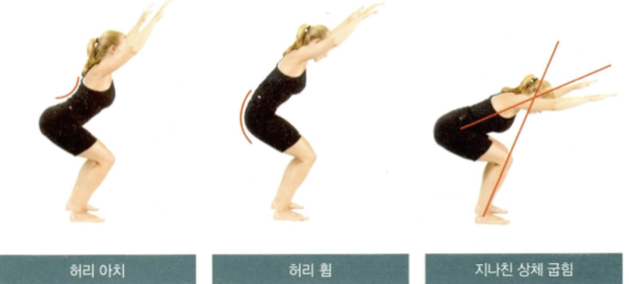
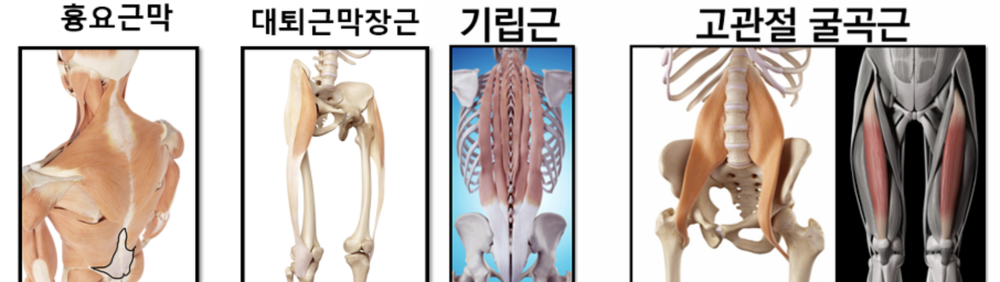
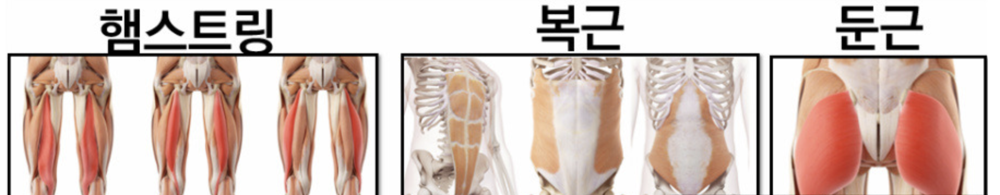

오버헤드스쿼트
오버헤드 스쿼트
준비중
아직 준비되지않은 운동입니다.
카메라 설정
노트북은 70cm
사용자는 노트북으로 부터 360cm 멀어지세요
화면을 발 끝에 맞춰주세요
start를 눌러주세요
Teachable Machine Pose Model
Start
키 : 180~185
키 : 170~175

전방경사-허리 아치
골반이 앞으로 기울어진 것 = 오리궁둥이
원인
잘못앉아있는 자세
예측가능손상
햄스트링 염좌, 앞쪽 무릎통증, 허리통증
긴장된 근육
기립근, 장요근, 대퇴사두근
약해지는 근육
둔근, 햄스트링, 복근


후방경사-허리 굽힘
원인
잘못앉아있는 자세
예측가능손상
넙다리뒤인대 통증, 넙다리근 통증, 샅굴부위 염좌, 허리통증
긴장된 근육
큰볼기근, 척주세움근, 내재적 중심안정근, 엉덩관절 굽힘근, 넓은등근
약해지는 근육
넙다리뒤인대, 큰모음근, 배곧은근, 배바깥빗근
지나친 상체 굽힘
원인
근력부족, 관절 가동성 부족
예측가능손상
넙다리뒤인대 통증, 넙다리근 통증, 샅굴부위 염좌, 허리통증
긴장된 근육
가자미근, 장딴지근, 궁둥구멍근, 엉덩굽힘근, 복부 복합체
약해지는 근육
앞정강근, 척추세움근, 큰볼기근, 내재적 중심안정근
(가로배근, 뭇갈래근, 횡돌기근, 배속빗근, 골반바닥근)